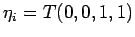

De forma similar, si la entrada actual es la etiqueta lingüística modificada ``a lo sumo''
la salida del bloque será una versión modificada de su conjunto difuso relacionado
 : El límite inferior de cada corte de
: El límite inferior de cada corte de
 se remplazará por 0, el límite inferior de su Universo de Discurso .
se remplazará por 0, el límite inferior de su Universo de Discurso .
Si la entrada actual es la palabra simple ``cualquier cosa'' la salida del bloque será el número difuso trapezoidal .